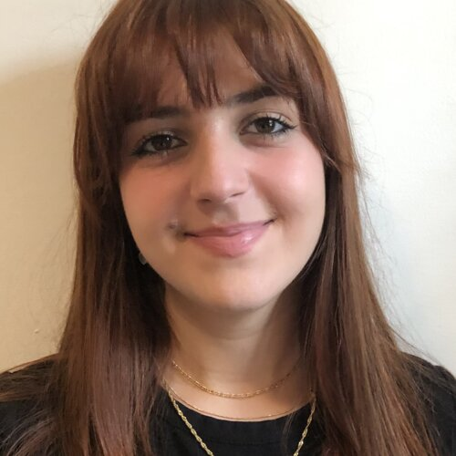
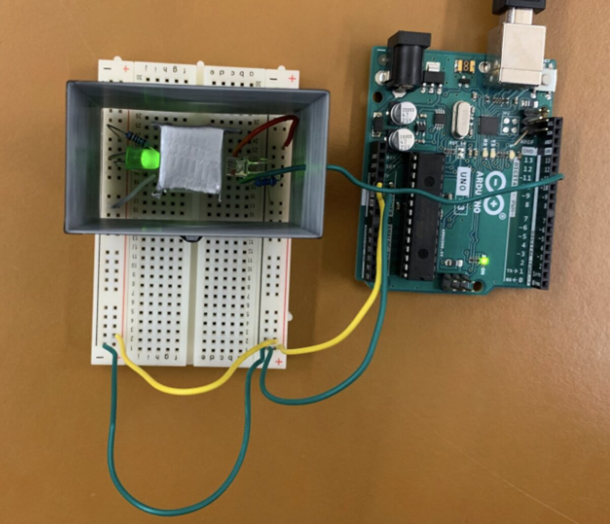
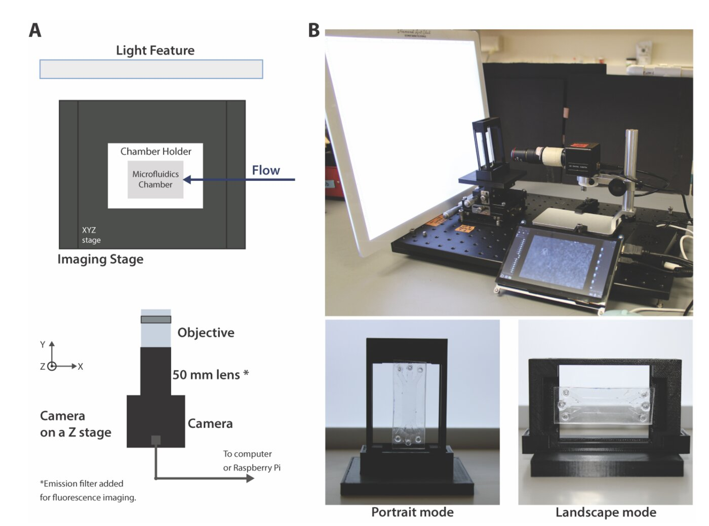
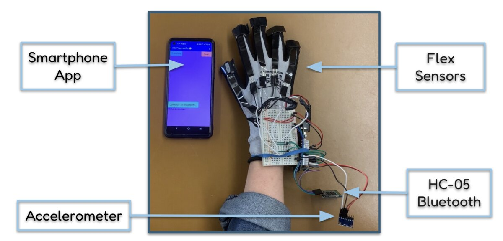
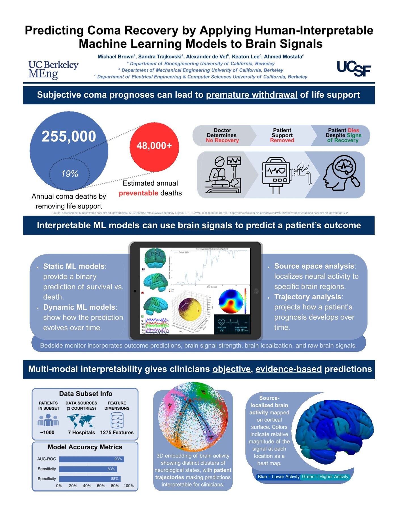

I build instruments that turn raw physiological signals into decisions clinicians can trust.
From lead-detection spectrophotometers to EEG pipelines predicting recovery after cardiac arrest, my work sits at the intersection of hands-on device engineering and signal processing.

Clinical grounding, engineering rigor.
I'm a recent MEng Bioengineering graduate from UC Berkeley (Magna Cum Laude), with a BS in Biomedical Engineering from CSULB (Summa Cum Laude, Engineering Honors Program). My MEng capstone, in collaboration with UCSF Health, built an EEG-based neurological outcome prediction pipeline for post-cardiac arrest patients.
I'm bilingual in English and French, and I'm currently based in Los Angeles, CA, open to roles across Los Angeles, San Diego, and the Bay Area.
Before graduate school, I worked as a nursing assistant in Surgery/Oncology and Medical Imaging at Mount Sinai Hospital Toronto, which gives me a clinically grounded perspective on how devices actually get used at the bedside and in the OR.
- EducationMEng Bioengineering, UC Berkeley (Magna Cum Laude)
- UndergraduateBS BME, CSULB (Summa Cum Laude, Engineering Honors Program)
- LanguagesEnglish, French
- Based inLos Angeles, CA
- Open toLos Angeles, San Diego, Bay Area
Selected work, in order.
Click into any project below for details, data, and photos of the actual builds.
Adjustable Medical Face Shield
Designed a multi-part, adjustable face shield assembly in SolidWorks as a team project, with interchangeable band components and snap-ring fasteners for a customizable fit.
View details →Low-Cost Spectrophotometer for Lead Contamination
Designed and validated a low-cost spectrophotometer to detect lead contamination, comparing yellow and green LED performance with and without a 3D-printed enclosure.
View details →
Swimming and Feeding Characteristics of Sand Dollar Larvae via Aquavert
Designed the microfluidic chip layouts in AutoCAD and the imaging fixtures in SolidWorks, then fabricated the platform (laser-cut PMMA molds, PDMS casting, plasma bonding, 3D-printed camera mounts) to study how sand dollar larvae respond to food gradients.
View details →
EEG-VR Integration for Motor Rehabilitation
Tested whether presenting SSVEP stimuli in VR, instead of on a laptop, improves signal quality for a future intention-driven rehab tool. IRB-approved protocol audited against ISO 13485, ISO 14971, and IEC 62304, with VR producing significantly stronger SSVEP power at all three tested frequencies.
View details →
Low-Cost ASL Translation Glove
A $58.71 wearable (commercial versions run about $3,300) that translates ASL fingerspelling to text in real time, using Arduino, flex sensors, an accelerometer, and a custom MIT App Inventor mobile app.
View details →
Predicting Coma Recovery from Brain Signals
Full pipeline from raw EEG through CHAMPAGNE source localization, 86 Desikan-Killiany atlas ROIs, feature extraction, and ProtoPNet classification, deployed to a bedside dashboard concept. Trained on about 1,000 patients across 7 hospitals, achieving 93% AUC-ROC. A manuscript is in the works for peer-reviewed publication.
View details →
Experience & Skills
Education
Experience
Technical Skills
Let's talk.
Open to roles in medtech, neurotech, and biotech. Based in Los Angeles, open to Los Angeles, San Diego, and the Bay Area.